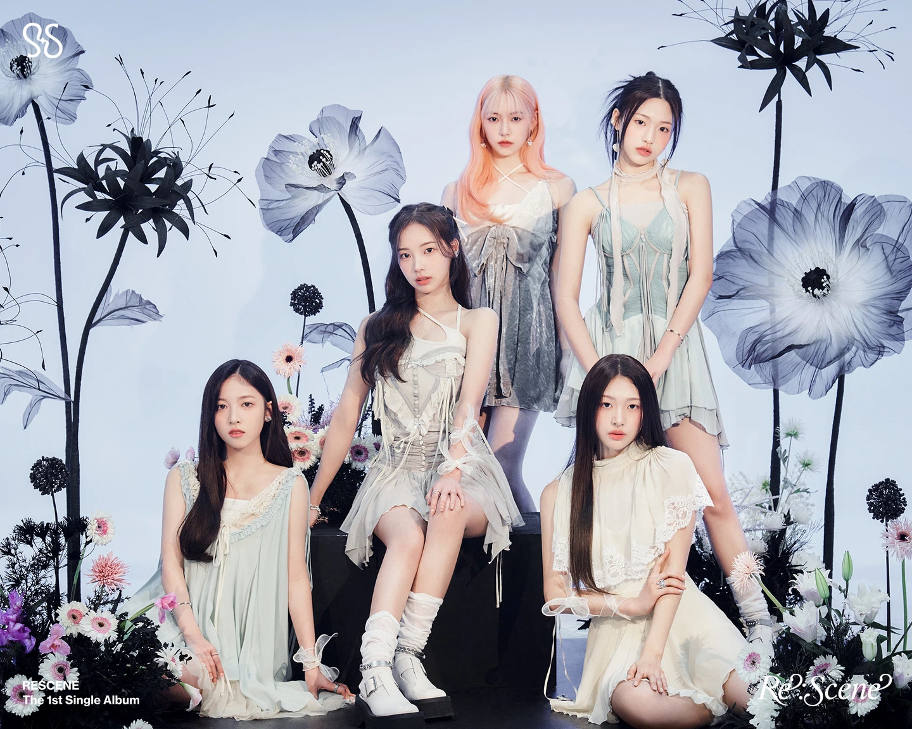

もう一度
音楽を聴くたびに、そのときの感情や大切な場面をもう一度思い出せる存在へ。
香りと記憶を結ぶ、RESCENEのコンセプトと歩み。

2024年3月、1st Single Album「Re:Scene」でデビューしたRESCENE。デビュー期の5人の姿とともに、グループの始まりを紹介します。
RESCENEは、香りによって過去の場面を思い出すように、音楽を通して人々の記憶に長く残ることを目指す5人組ガールズグループです。
グループ名には「場面（SCENE）を再び（RE）思い起こす」という意味が込められ、音楽・ビジュアル・物語がひとつの世界観としてつながっています。
5人組ガールズグループ
RESCENEと場面を共有するファンダム
1st Single Album『Re:Scene』
音楽を聴くたびに、そのときの感情や大切な場面をもう一度思い出せる存在へ。
5人の声と表現で新しい場面を作り、REMINEと一緒にその記憶を重ねていきます。
WONI・LIV・MINAMI・MAY・ZENAの詳しいプロフィールページへ。